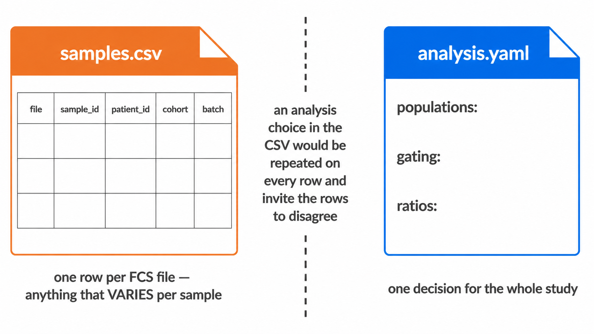

A run takes two files besides the FCS directory:
samples.csv |
one row per FCS file: what it is, whose it is, which group and batch it belongs to, and any externally measured counts for it |
analysis.yaml |
what to score and how: the populations, and every choice shared by all samples |
Between them they specify a run completely. Anything varying per sample belongs in the CSV; anything that is one decision for the whole study belongs in the YAML. An analysis choice put in the CSV would repeat on every row and invite the rows to disagree about it.
Both templates ship with the package:
docker run --rm --entrypoint sh cyraven:1.0.0 -c \
'cat /usr/local/lib/R/site-library/cyRAVEN/examples/samples_template.csv'docker run --rm --entrypoint sh cyraven:1.0.0 -c \
'cat /usr/local/lib/R/site-library/cyRAVEN/examples/analysis_template.yaml'From R,
system.file("examples", "samples_template.csv", package = "cyRAVEN")
and
system.file("examples", "analysis_template.yaml", package = "cyRAVEN").
1. Build the sheet
Do not write it from scratch. Generate one covering every file in the input directory, then fill in the columns only you know:

docker run --rm -v "$PWD/data:/data" cyraven:1.0.0 \
--dir /data/fcs --write-samples /data/samples.csvEvery acquisition gets a row with its filename and a derived identifier, so the sheet accounts for every file before you touch it. A file the sheet does not cover is a fatal error rather than a guess: inferring which patient a file belongs to from plate order silently mislabels patients, and a mislabelled patient is not visible in any output.
Then check it, which costs seconds because it reads FCS headers and not events:
docker run --rm -v "$PWD/data:/data:ro" -v "$PWD/results:/results" \
cyraven:1.0.0 --dir /data/fcs --samples /data/samples.csv \
--config /data/analysis.yaml --outdir /results --check--check reports the markers it resolved from the files,
the specification entries matching none of them, whether the sheet
covers every file, the levels of the group column and their sizes, the
number of batches, and the study variables available. It analyses
nothing and writes nothing. Run it after every edit to the sheet; a
marker-name mismatch found here costs a second, and found during a run
costs however long the run had been going.
2. Columns of the sheet
Only file is required. Everything else is optional, and
a column that is absent simply disables what depends on it.
2.1 Which file this is
| Column | Meaning |
|---|---|
file |
The FCS filename. Matched on basename, so a file moved between subdirectories still matches. Required. |
sample_id |
The identifier used in every output. Derived from the filename when absent. |
well |
Plate well, used as the identifier when sample_id is
absent. |
patient_id |
The subject. Several rows may share one, which is what makes repeat acquisitions and longitudinal designs work. |
panel |
Forces a panel assignment. Panels are fingerprinted from the channels otherwise. |
timepoint |
Visit or draw. |
is_control |
TRUE for a control tube. Controls are read and used as
references but excluded from between-group tests. Setting it
FALSE is not the same as leaving it out: FALSE
asserts that the file is a biological sample, and the assertion matters.
See below. |
Say FALSE rather than saying nothing
An absent is_control column means “unknown”, not “no
controls here”. The distinction has teeth.
A control tube supplies the reference distribution for markers that resolve no density minimum, and the cut is then the 99.5th percentile of the control. That is correct when the reference really is unstained. When it is a stained biological sample, the cut lands at the top of a real distribution and the population beneath it all but disappears.
Up to version 1.0.0 a sample that failed staining QC could be promoted to that reference on a sheet that named no controls, on the reasoning that an unlabelled tube might be one. On a cohort of twelve patient samples with no controls at all, that put T cells at 0.034% of CD45+ where the correct figure was over a hundred times higher, with no error and no warning.
cyRAVEN now believes a control only when the sheet declares one, and says so in the log when it declines to promote a sample. Two habits follow from that:
- Write
is_controlon every row,FALSEfor samples andTRUEfor controls.--write-samplesdoes this for you. - If most rows of
thresholds_used.csvreadcontrol_q995in thesourcecolumn, check which sample supplied the reference before reading any frequency. |fmo_for| Comma-separated markers this file is the fluorescence-minus-one control for. | |control_group| Confines a control to the samples sharing its value, since a reagent lot changes between batches. |
2.2 Whose it is
These describe the subject, so they repeat on every row of that subject.
patient_id, date_of_birth,
sex, age_years, height_cm,
weight_kg, infection_focus,
cohort, wbc_per_ul.
They are recognised by their canonical name and by the spellings
common in clinical exports, in English and German, so a sheet headed
Geschlecht or Patient ID resolves without
being translated first. Values are coerced the same way whichever route
supplies them: decimal commas, dates whose day and month order is
resolved from the column as a whole, and sex and clinical vocabulary
translated through a dictionary that passes unknown values through and
reports them rather than mangling them. Extend the dictionary under
metadata: in the YAML.
Age is derived from date_of_birth when it is missing,
against --reference-date. Set that to a fixed study date,
or ages change as the calendar moves and two runs of the same data
disagree.
A subject’s rows must agree. This is the one hazard
the one-file shape introduces that separate tables did not have: with a
row per file, a patient with three acquisitions carries three copies of
their sex. If two disagree, the run stops and names every conflict as
subject / column: value vs value. There is no defensible
way to pick one, and picking silently is how a cohort acquires a patient
who is both male and female depending on which tube you look at.
A blank is not a disagreement. It is filled from the rows that have a value.
2.3 What was measured externally
Any column named count.<Population> is read as an
externally measured absolute count for that population, from bead-based
or volumetric counting.
file,sample_id,count.Granulocytes,count.Monocytes
HC-01.fcs,HC-01,3810,420A frequency is a proportion of a parent gate, so it moves whenever
any other population moves. An absolute concentration does not, which is
why these are worth carrying when the laboratory measured them. Blanks
are skipped rather than read as zero. Units are cells/uL
unless samples: count_unit: cells/mL says otherwise, in
which case values are divided by 1000.
3. The config
populations: is the only required section. Everything
else takes a documented default when omitted, and the default in force
is stated in the run log.
Populations, functional blocks and ratios are covered in the Gating article; thresholds, colours and metadata dictionaries in the Running cyRAVEN. One section belongs here, because it is about the sheet:
Naming the roles here means the two files specify the run on their own, with no further flags. A flag still wins where both are given: the config is the study’s standing choice, the flag is this run’s.
4. The older three-file format
--sample-map, --patient-table and
--absolute-counts still work exactly as before and are not
deprecated. Runs made with them remain reproducible.
They cannot be combined with --samples. The sheet
carries the same facts, and two sources of truth for one fact is what
this format removes.
The sheet is a different way to supply the same facts, not a different analysis. The reader splits it into the same three structures the pipeline always consumed and applies the same coercions by calling the same code. A test runs one study both ways and compares every output.
Which to use:
| Situation | Use |
|---|---|
| A new study | The sheet. One key, one file, no joins. |
| An existing pipeline built on the three files | Leave it. Nothing has changed. |
| Counts exported by the counting instrument as its own sheet |
--absolute-counts reads that file’s own layout; see the
Output article. Fold it into the sheet only
if transcribing it is easy. |
5. Worked example
The image, once. Pull it, or build it from source if you have changed the code – see the Running cyRAVEN article.
Put the FCS files in data/fcs/ a sheet covering every file.
docker run --rm -v "$PWD/data:/data" cyraven:1.0.0 \
--dir /data/fcs --write-samples /data/samples.csvEdit samples.csv: patient_id, cohort, and any study variable a config: start from the shipped template.
docker run --rm --entrypoint sh cyraven:1.0.0 -c \
'cat /usr/local/lib/R/site-library/cyRAVEN/examples/analysis_template.yaml' \
> data/analysis.yamlEdit populations: to match the panel. –check lists the marker names. validate, in seconds.
docker run --rm -v "$PWD/data:/data:ro" -v "$PWD/results:/results" \
cyraven:1.0.0 --dir /data/fcs --samples /data/samples.csv \
--config /data/analysis.yaml --outdir /results --checkRun.
docker run --rm -v "$PWD/data:/data:ro" -v "$PWD/results:/results" \
cyraven:1.0.0 --dir /data/fcs --samples /data/samples.csv \
--config /data/analysis.yaml --group-column cohort \
--reference-group "Healthy controls" --batch-column acquisition_date \
--cluster --outdir /resultsOpen results/report.html. It carries every figure and
table the run produced, embedded, and needs no other file.
6. When it goes wrong
A run that fails writes report.html anyway, with the
error, the stage it reached, the log leading up to it, what the error
means for the data, and the next action. Everything produced before the
failure is embedded below the diagnosis, because that partial output is
usually where the evidence is.
The errors this format can raise, and what each means:
| Message | Cause |
|---|---|
these input files are not in the sample sheet |
The sheet has no row for a file. Add rows, or regenerate with
--write-samples. |
conflicting values for the same subject |
Two rows of one subject disagree. The message names each conflict. |
duplicate file entries |
Two rows name the same file. |
must contain a 'file' column |
The one required column is missing. |
--samples supersedes ... |
The sheet was combined with a flag it replaces. |
Every population reported UNAVAILABLE, or an empty
frequency table, is almost always a marker name that does not match
$PnS exactly. --check lists every marker the
files carry and names the specification entries matching none of
them.